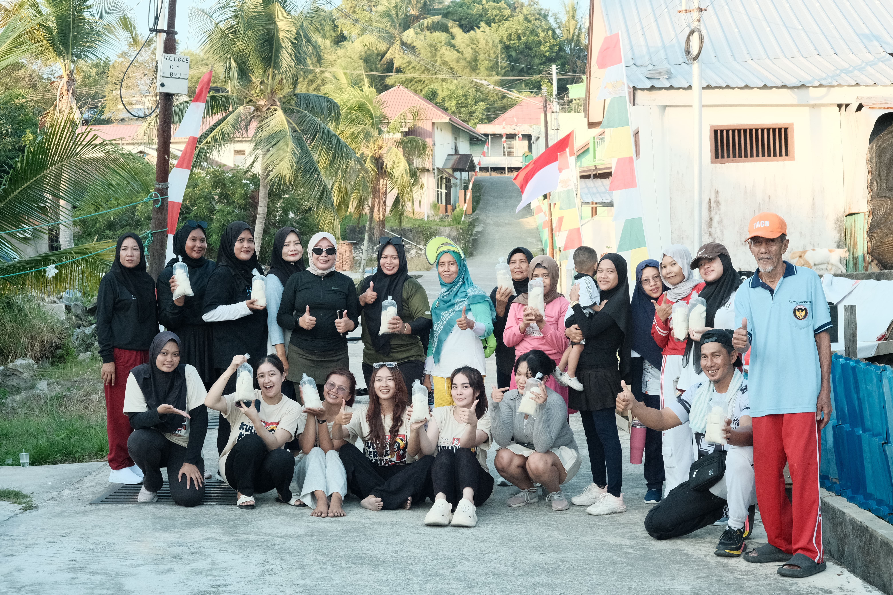
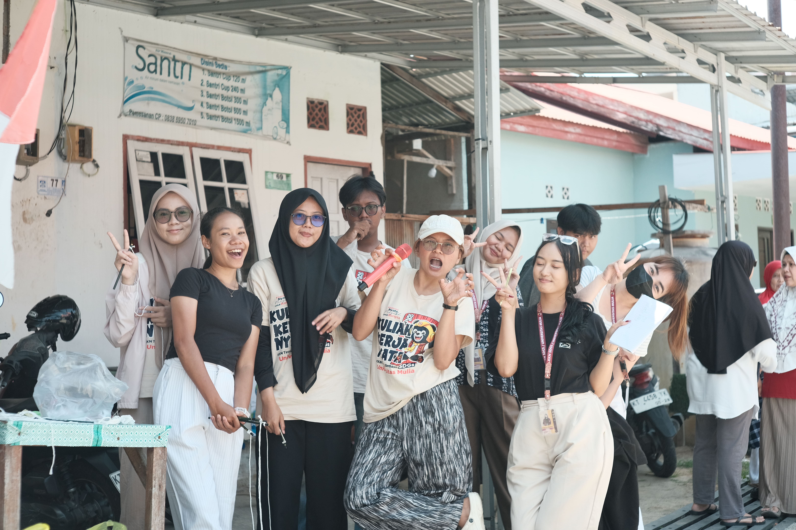
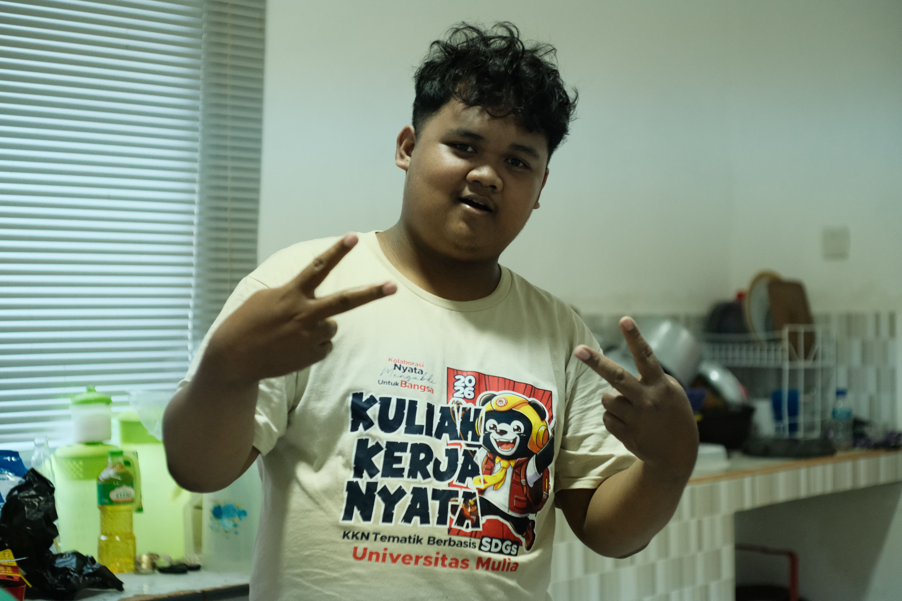
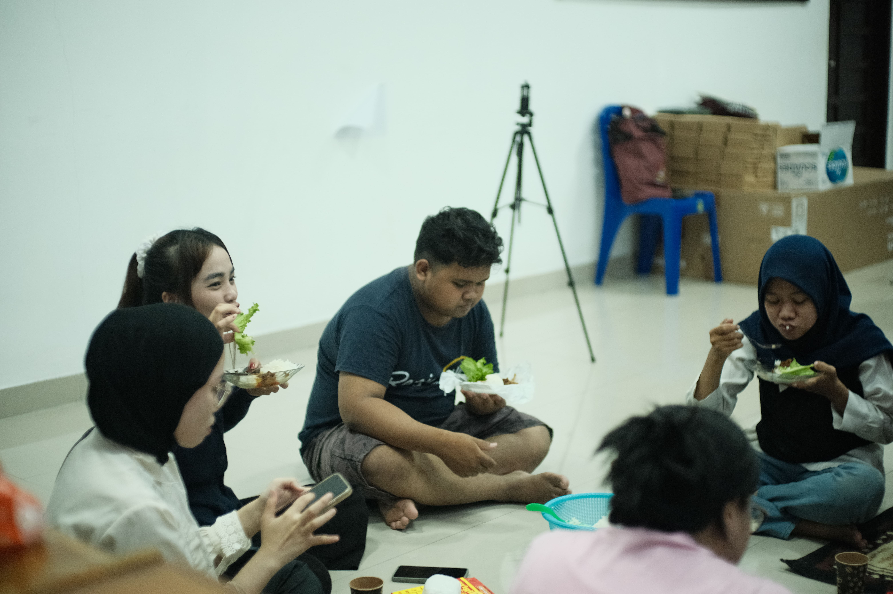
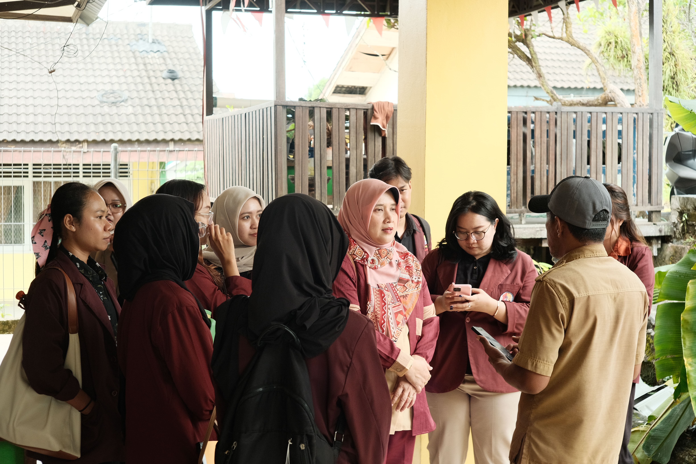
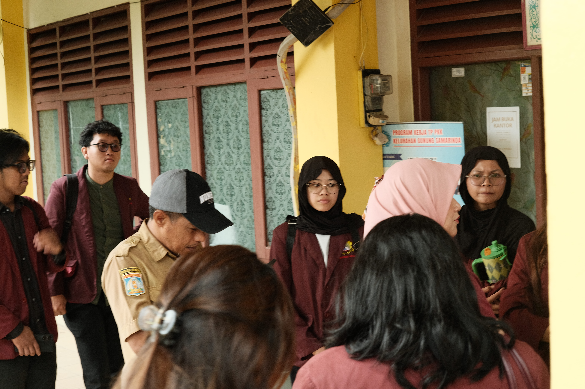
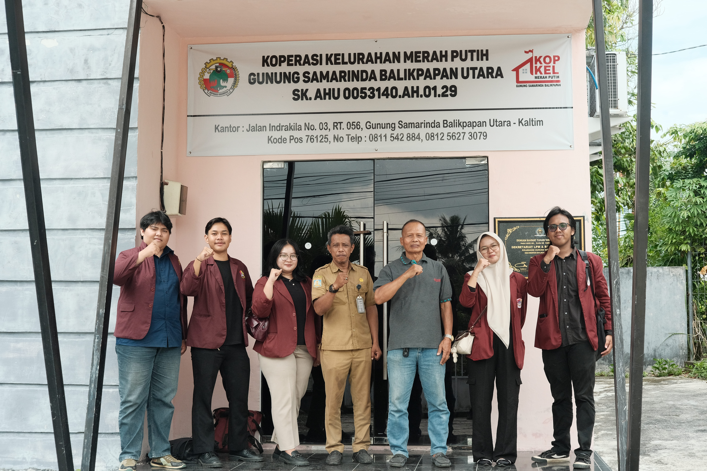
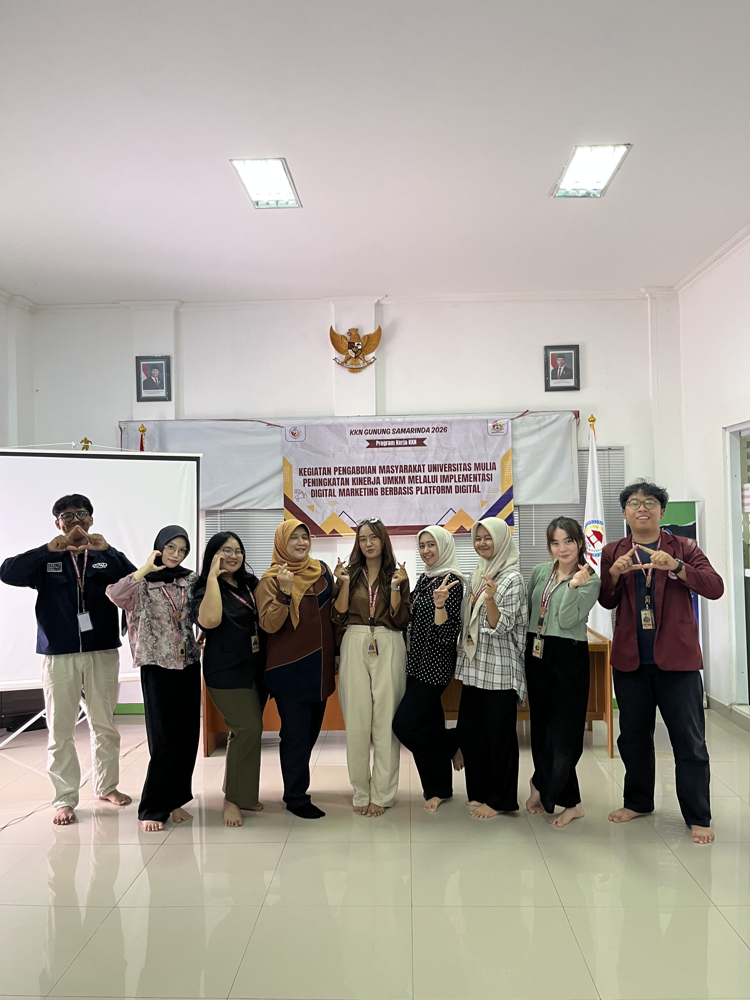

LOGO 2';">
KKN Gunung Samarinda
Balikpapan, Kalimantan Timur
Archived by Tim KKN Gunung Samarinda
Balikpapan, Kalimantan Timur
Kami adalah Tim KKN Gunung Samarinda 1 & 2 yang mendedikasikan diri untuk pengabdian ke kelurahan, membersamai warga, menjalankan berbagai program kerja di sekolah-sekolah, hingga pengembangan peta digital (geomaps) demi kemajuan Kelurahan Gunung Samarinda, Balikpapan Utara.
Koleksi memori perjalanan KKN kami.

Moment 1';">
Moment 2';">
Moment 3';">
Moment 4';">
Moment 5';">
Moment 6';">
Moment 7';">
Moment 8';">